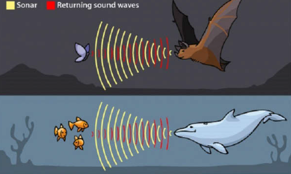

Frekuensi Gelombang Bunyi
Tahukah kamu untuk dapat didengar, sebuah gelombang bunyi melakukan getaran dengan frekuensi tertentu. Namun tidak semua frekuensi dapat didengar oleh manusia lho. Nah berikut ini merupakan klasifikasi rentang frekuensi bunyi.
1. Infrasonik
Infrasonik merupakan kelompok bunyi yang memiliki frekuensi di bawah 20 Hz. Rentang bunyi ini dapat didengar oleh beberapa jenis binatang, seperti Jangkrik dan Anjing.
2. Audiosonik
Audiosonik merupakan kelompok bunyi yang memiliki frekuensi antara 20 Hz s.d. 20.000 Hz. Rentang bunyi inilah yang dapat didengar oleh manusia.
3. Ultrasonik

Ultrasonik merupakan kelompok bunyi yang memiliki frekuensi di atas 20.000 Hz. Rentang bunyi ini dapat didengar oleh Lumba-lumba dan Kelelawar.
Tapi, meskipun frekuensi bunyi ultrasonic berada di atas batas pendengaran manusia, namun banyak manfaat yang dimilikinya dan tidak mengganggu manusia.
1. Bunyi ultrasonik dalam bidang kesehatan
Gelombang ultrasonik digunakan pada bidang kesehatan dalam berbagai diagnosis. Pulsa gelombang ultrasonik berfrekuensi tinggi yang dihasilkan dikenakan langsung pada tubuh yang didiagnosis. Pemantulan pulsa gelombang terjadi jika gelombang mengenai batas dua jaringan
yang berbeda kerapatannya (misalnya daging dengan tulang, daging dengan pembuluh darah yang berisi cairan).
2. Bunyi ultrasonik dalam bidang industri
Ultrasonik digunakan untuk menemukan keretakan bagian dalam dari sambungan logam, mengaduk campuran susu agar homogen, memusnahkan bakteri pada makanan yang diawetkan dalam kaleng.
3. Bunyi ultrasonic untuk mengukur kedalaman laut
Prinsipnya penggunaan ultrasonik untuk mengukur kedalaman laut atau lokasi kawanan ikan adalah dengan cara gelombang ultrasonik dipancarkan ke dasar laut kemudian pantulannya diterima kembali oleh sebuah pesawat penerima di kapal.